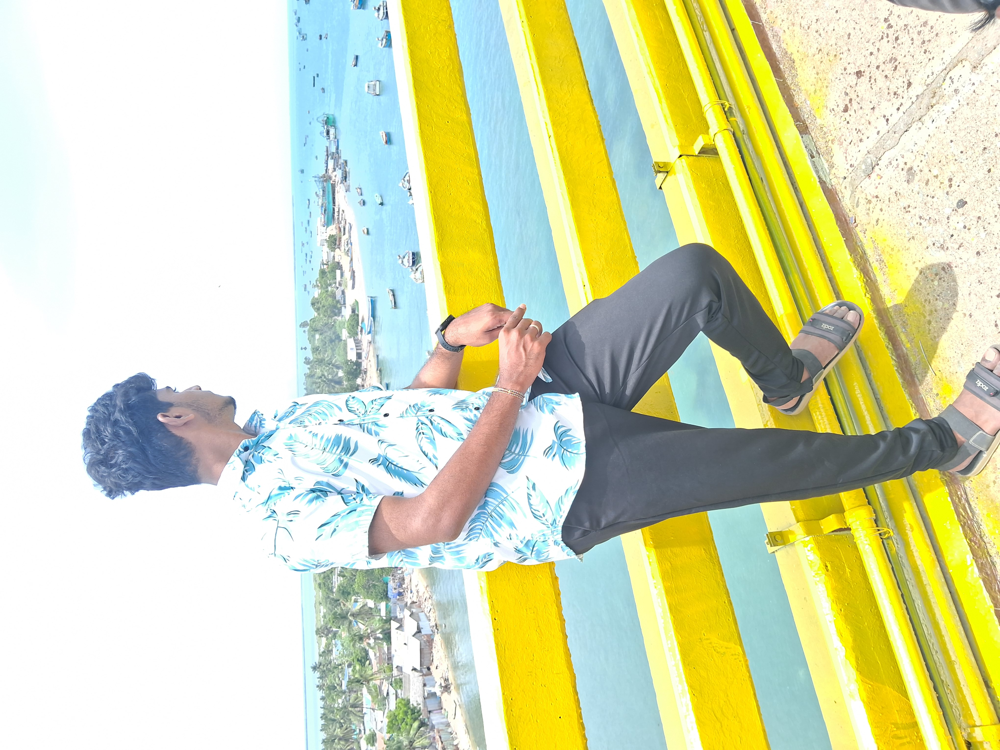

My Blogs
DUBAI
I recently had the incredible opportunity to travel to Dubai with my family, marking my first experience flying. The journey itself was thrilling, as I got to witness the beauty of the skies and the seamless process of air travel for the first time. Upon arrival, we immersed ourselves in the vibrant culture and luxurious lifestyle that Dubai offers. Our itinerary included visits to some of the city's most iconic landmarks and attractions. We spent time relaxing and enjoying the pristine beaches, where the warm sun and the clear blue waters provided the perfect setting for leisure and fun. Exploring the grand malls was a highlight, as we marveled at the vast array of international brands, exquisite dining options, and unique entertainment experiences. A visit to the Burj Khalifa was truly a pinnacle experience. Standing at the observation deck of the world's tallest building, we were awestruck by the panoramic views of the city, stretching from the bustling streets to the serene desert horizon. This trip to Dubai was not just a vacation but a collection of unforgettable experiences that broadened my horizons and enriched my understanding of the world.

Our visit to the Burj Khalifa, the world's tallest building, was a pinnacle experience. The high-speed elevator ride to the observation deck was thrilling, and the panoramic views from the top were absolutely breathtaking. The cityscape, stretching from the bustling streets to the expansive desert, was a sight to behold.A desert safari adventure added a touch of excitement to our trip. We experienced dune bashing in a 4x4 vehicle, rode camels, and enjoyed a traditional Bedouin-style dinner under the stars. The evening concluded with a captivating belly dance performance and a fire show, creating lasting memories.
RAMESHWARAM
I recently embarked on a memorable journey to Rameshwaram with my family and friends, a trip that was filled with cultural exploration and spiritual enrichment. Traveling by road added to the excitement as we enjoyed scenic views and the camaraderie of traveling together. Rameshwaram, with its rich historical and religious significance, offered us a profound experience. We visited the renowned Ramanathaswamy Temple, where the intricate architecture and the serene ambiance left us in awe. Participating in the rituals and experiencing the spiritual energy of the place was truly uplifting. The trip also included a visit to the pristine Dhanushkodi Beach, where we soaked in the natural beauty and the tranquil surroundings. The clear waters and the serene environment provided a perfect setting for relaxation and reflection. Exploring the local markets and savoring the regional cuisine were highlights of our journey. The flavors and the hospitality of the people added to the charm of our trip, making it a delightful and enriching experience. This journey to Rameshwaram with my loved ones not only deepened my appreciation for our cultural heritage but also created lasting memories that I will cherish forever.
Our evenings were filled with camaraderie and laughter as we shared stories and experiences. The warmth of the local people and their hospitality added to the charm of our trip, making us feel at home in this distant place. .
KODAIKANAL
Kodaikanal, known as the "Princess of Hill Stations," welcomed us with its lush greenery and refreshing climate. Our first stop was the picturesque Kodai Lake, where we enjoyed a relaxing boat ride, taking in the tranquil beauty of the surroundings. The lake, surrounded by verdant hills, provided a perfect backdrop for some serene moments and group photos. Exploring the Coaker's Walk was another delightful experience. This narrow pedestrian path offered breathtaking views of the valleys and hills. We strolled along the path, marveling at the panoramic vistas and the occasional play of clouds over the mountains. A visit to the Bryant Park added a touch of nature’s splendor to our trip. The park, with its vibrant array of flowers and well-maintained lawns, was a perfect spot for a leisurely picnic. We enjoyed the colorful blooms and took numerous photos to capture the beauty of the place. Our adventurous spirit led us to the Guna Caves, a popular yet mysterious attraction. The caves, shrouded in mist and surrounded by dense forest, had an eerie charm that intrigued us. While the entry to the caves was restricted, the surrounding pine forest and the panoramic views from the nearby cliffs were captivating. One of the most memorable experiences was the trek to Dolphin’s Nose. The trek, though challenging, was rewarding as we reached the viewpoint that offered a stunning view of the valley below. The sheer drop and the expansive view of the mountains were awe-inspiring, making it a perfect spot for some reflective moments. We also visited the Silver Cascade Falls, where the cascading waters created a mesmerizing sight. The sound of the waterfall and the cool mist in the air provided a refreshing break from our ride. In the evenings, we gathered around bonfires, sharing stories, laughter, and bonding over delicious local cuisine. The warmth of the fire and the camaraderie of friends and family made these moments truly special..
This bike trip to Kodaikanal was more than just an adventure; it was a journey filled with natural beauty, thrilling experiences, and cherished moments with loved ones. The combination of the scenic ride, the enchanting destinations, and the joy of being with family and friends made it an unforgettable experience that I will treasure forever.